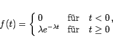
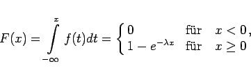
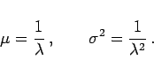

Inhalt Index DeskTop Bronstein

 Wahrscheinlichkeitsrechnung und Mathematische Statistik Wahrscheinlichkeitsrechnung Stetige Verteilungen
Wahrscheinlichkeitsrechnung und Mathematische Statistik Wahrscheinlichkeitsrechnung Stetige Verteilungen


|  | (16.82) |
(s. Abbildung) und damit die Verteilungsfunktion
|  | (16.83) |
hat.
|  | (16.84) |
Angewendet wird die Exponentialverteilung zur Beschreibung folgender Vorgänge: Dauer von Telefongesprächen, Lebensdauer des radioaktiven Zerfalls, Arbeitszeit einer Maschine zwischen zwei Stillständen, Lebensdauer von Bauelementen oder Lebewesen.